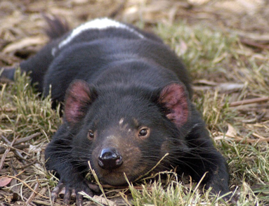
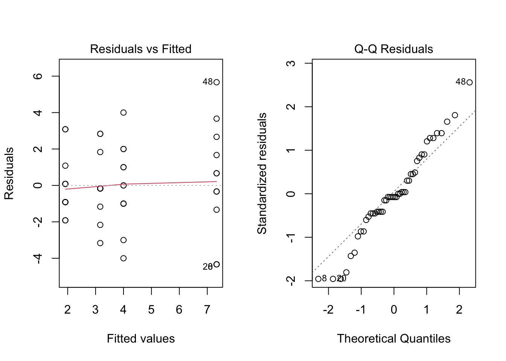
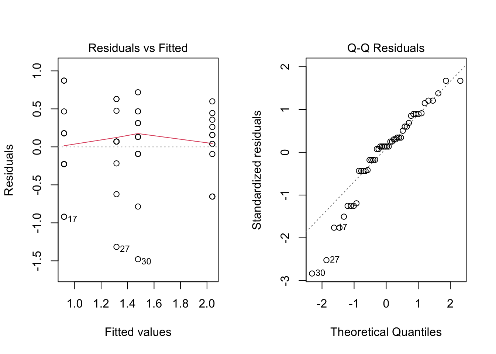
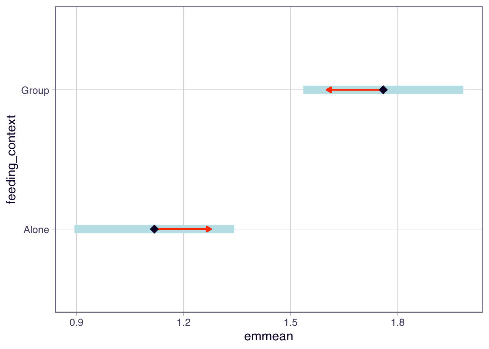
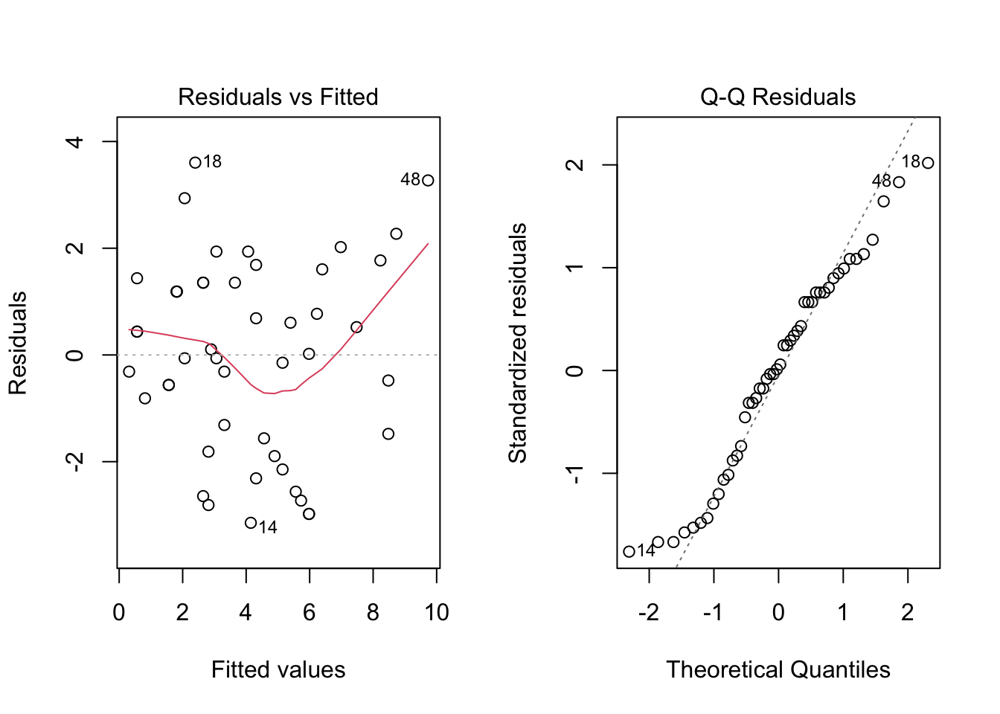
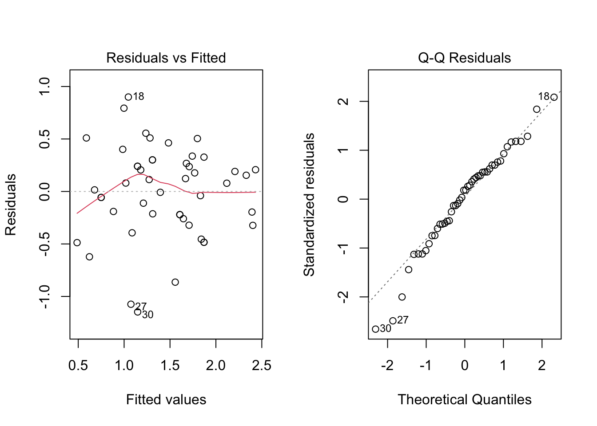

Welcome!
This week we will analyse a factorial experiment using ANOVA: first as a completely randomised design (CRD), then as a randomised complete block design (RCBD). The experiment investigates aggressive interactions in Tasmanian devils.
You will come across Exercises in this lab. Solutions will be posted on Friday evening.
Learning outcomes
At the end of this practical students should be able to:
- use R to analyse experiments with a factorial treatment structure where the experimental design is a CRD or RCBD;
Specific goals
By the end of this lab, you should be able to:
Preparation
This lab uses emmeans. Install it if you are missing it by running the following in the console:
Downloads
| File | Used in | Download |
|---|---|---|
tasmanian_devil_aggression.csv |
Sections 1 and 2 | Download |
1. Factorial ANOVA as CRD (~30 min)
You are interested in investigating if aggressive interactions between Tasmanian devil individuals are influenced by eating in a group or alone, and if they are male or female. You conduct an experiment where you observe the number of aggressive interactions between individuals in a 10 minute trial. You have 12 nights to conduct the experiment and each night you observe one trial for each of the 4 treatment combinations.
Analyse the data using a factorial ANOVA as if it was collected by a CRD.
The data is in the tasmanian_devil_aggression.csv file.
Factors:
- feeding_context: Alone vs Group
- sex: Female vs Male
Response variables:
- aggression_count (integer count per trial)
- log_aggression = log(aggression_count + 1)
Blocking factor (we will ignore this for the CRD analysis but it will be used in the RCBD analysis):
- block: Night_01 … Night_12 (each night includes all 4 treatment combinations)
- Total N: 12 blocks × 2 sexes × 2 contexts = 48 trials (1 obs per cell per block)

Analysis
Exercise 1
(i) Write out the statistical model for the factorial ANOVA for this experiment. Define all the terms in the model. You can write out in words or in mathematical notation.
(ii) Test the assumptions of the factorial ANOVA and transform the data (if needed). Hint first run the model using the aov() function and then use the plot() function to check the assumptions.
(iii) Use an ANOVA to analyse the CRD and report on the results.
(iv) Explore any significant results using post-hoc tests from emmeans package and its emmeans() function. Include any plots that you think are useful to visualise the results.
Solution
(i) The statistical model for the factorial ANOVA is:
Y_{ijk} = \mu + \alpha_i + \beta_j + (\alpha\beta)_{ij} + \epsilon_{ijk}
Where:
Y_{ijk} is the response variable (aggression count) for the kth observation in the ith level of feeding context and jth level of sex
\mu is the overall mean aggression count
\alpha_i is the effect of the ith level of feeding context (Alone vs Group)
\beta_j is the effect of the jth level of sex (Female vs Male)
(\alpha\beta)_{ij} is the interaction effect between feeding context and sex
\epsilon_{ijk} is the random error term for the kth observation in the ith level of feeding context and jth level of sex and is assumed to be normally distributed with mean 0 and constant variance \sigma^2.
OR:
Aggression\ count = overall\ mean + feeding\ context + sex + feeding\ context\times sex + random\ error
(ii) Test the assumptions of the factorial ANOVA and transform the data (if needed).
Read in the data and convert to factor if required.
'data.frame': 48 obs. of 6 variables:
$ id : int 1 2 3 4 5 6 7 8 9 10 ...
$ block : chr "Night_01" "Night_01" "Night_01" "Night_01" ...
$ sex : chr "Female" "Female" "Male" "Male" ...
$ feeding_context : chr "Alone" "Group" "Alone" "Group" ...
$ aggression_count: int 3 5 5 8 1 4 3 3 5 3 ...
$ log_aggression : num 1.386 1.792 1.792 2.197 0.693 ...'data.frame': 48 obs. of 6 variables:
$ id : int 1 2 3 4 5 6 7 8 9 10 ...
$ block : chr "Night_01" "Night_01" "Night_01" "Night_01" ...
$ sex : Factor w/ 2 levels "Female","Male": 1 1 2 2 1 1 2 2 1 1 ...
$ feeding_context : Factor w/ 2 levels "Alone","Group": 1 2 1 2 1 2 1 2 1 2 ...
$ aggression_count: int 3 5 5 8 1 4 3 3 5 3 ...
$ log_aggression : num 1.386 1.792 1.792 2.197 0.693 ...Run the model and check the assumptions with the plot() function.

The residual diagnostics show that the data is not normally distributed, has unequal variance (fanning). A log transformation is applied to the response variable to try and meet the assumptions.

The residual diagnostics show that the data is not normally distributed, but now has equal variance. Given ANOVA is robust against non-normality, we will proceed with the analysis using the log transformed response variable.
(iii) Use an ANOVA to analyse the CRD and report on the results.
Df Sum Sq Mean Sq F value Pr(>F)
feeding_context 1 4.937 4.937 16.637 0.000187 ***
sex 1 2.752 2.752 9.274 0.003917 **
feeding_context:sex 1 0.082 0.082 0.276 0.601716
Residuals 44 13.058 0.297
---
Signif. codes: 0 '***' 0.001 '**' 0.01 '*' 0.05 '.' 0.1 ' ' 1The ANOVA table shows that there is not a significant interaction between feeding_context and sex with a P-value of 0.60. This means we can now move to the main effects and see that both feeding_context and sex have a significant influence on log_aggression.
(iv) Explore any significant results using post-hoc tests from emmeans package and its emmeans() function. Include any plots that you think are useful to visualise the results.
Main effect of feeding_context is significant so we can use emmeans() to conduct post-hoc tests to determine which pairs are significantly different. The results show that the log_aggression is significantly higher when feeding in a group compared to alone.
Welcome to emmeans.
Caution: You lose important information if you filter this package's results.
See '? untidy'NOTE: Results may be misleading due to involvement in interactions$emmeans
feeding_context emmean SE df lower.CL upper.CL
Alone 1.12 0.111 44 0.894 1.34
Group 1.76 0.111 44 1.535 1.98
Results are averaged over the levels of: sex
Results are given on the log(mu + 1) (not the response) scale.
Confidence level used: 0.95
$contrasts
contrast estimate SE df t.ratio p.value
Alone - Group -0.641 0.157 44 -4.079 0.0002
Results are averaged over the levels of: sex
Note: contrasts are still on the log(mu + 1) scale. Consider using
regrid() if you want contrasts of back-transformed estimates. Plotting the marginal means for feeding_context shows that the log_aggression is higher when feeding in a group compared to alone.
NOTE: Results may be misleading due to involvement in interactions
The main effect of sex is significant so we can use emmeans() to conduct post-hoc tests to determine which pairs are significantly different. The results show that the log_aggression is significantly
NOTE: Results may be misleading due to involvement in interactions$emmeans
sex emmean SE df lower.CL upper.CL
Female 1.20 0.111 44 0.975 1.42
Male 1.68 0.111 44 1.454 1.90
Results are averaged over the levels of: feeding_context
Results are given on the log(mu + 1) (not the response) scale.
Confidence level used: 0.95
$contrasts
contrast estimate SE df t.ratio p.value
Female - Male -0.479 0.157 44 -3.045 0.0039
Results are averaged over the levels of: feeding_context
Note: contrasts are still on the log(mu + 1) scale. Consider using
regrid() if you want contrasts of back-transformed estimates. Males have a significantly higher log_aggression compared to females.
Plotting:
Before we move on, now is a good time to take a 5-minute break.
2. Factorial ANOVA with blocking (~30 min)
Now we will analyse the same experiment as above but this time we will include the blocking factor of block (night) in the analysis. This means we will be analysing the data as if it was collected by a RCBD.
Analysis
Exercise 2
(i) Write out the statistical model for the factorial ANOVA with blocking for this experiment. Define all the terms in the model. You can write out in words or in mathematical notation.
(ii) Test the assumptions of the ANOVA model and transform the data (if needed). Hint first run the model using the aov() function and then use the plot() function to check the assumptions.
(iii) Use an ANOVA to analyse the RCBD and report on the results.
(iv) Calculate how much variation the blocking term captured.
Solution
(i) The statistical model for the factorial ANOVA with blocking is:
Y_{ijkl} = \mu + \alpha_i + \beta_j + (\alpha\beta)_{ij} + \gamma_k + \epsilon_{ijkl} Where:
- Y_{ijkl} is the response variable (aggression count) for the $l $th observation in the ith level of feeding context, $j $th level of sex and kth block (night)
- \mu is the overall mean aggression count
- \alpha_i is the effect of the ith level of feeding context (Alone vs Group)
- \beta_j is the effect of the $j $th level of sex (Male vs Female)
- (\alpha\beta)_{ij} is the interaction effect between feeding context and sex
- \gamma_k is the effect of the kth block (night)
- \epsilon_{ijkl} is the random error term for the lth observation in the ith level of feeding context, $j $th level of sex and kth block (night) and is assumed to be normally distributed with mean 0 and constant variance \sigma^2.
OR:
Aggression\ count = overall\ mean + block + feeding\ context + sex + feeding\ context \times sex + random\ error
(ii) Test the assumptions of the ANOVA model and transform the data (if needed).
Run the model and check the assumptions with the plot() function.

The residual diagnostics show that the data is not normally distributed, but has equal variance. A log transformation is applied to the response variable to try and meet the assumption of normality.

The residual diagnostics show that the data is close to being normally distributed. Given ANOVA is robust against non-normality, we will proceed with the analysis using the log transformed response variable.
(iii) Use an ANOVA to analyse the RCBD and report on the results.
Df Sum Sq Mean Sq F value Pr(>F)
block 11 4.115 0.374 1.380 0.227950
feeding_context 1 4.937 4.937 18.219 0.000156 ***
sex 1 2.752 2.752 10.156 0.003140 **
feeding_context:sex 1 0.082 0.082 0.303 0.585914
Residuals 33 8.943 0.271
---
Signif. codes: 0 '***' 0.001 '**' 0.01 '*' 0.05 '.' 0.1 ' ' 1The ANOVA table shows that there is not a significant interaction between feeding_context and sex with a P-value of 0.59. However, both main effects are significant.
(iv) Calculate how much variation the blocking term captured.
The sum of squares for the block term is 4.115 Total sum of squares is:
The percentage of variation captured by the block term is:
The block term captured 19.76% of the variation in the data, so it was useful using a RCBD for this experiment.
Conclusion
Closing thoughts
We analysed a factorial experiment this week using Tasmanian devil aggression data: first as a CRD to test for main effects and interactions, then as an RCBD to account for night-to-night variation. These factorial designs and analysis techniques extend the one-way ANOVA methods from previous weeks.
Attribution
This lab was developed using resources that are available under a Creative Commons Attribution 4.0 International license, made available on the SOLES Open Educational Resources repository.